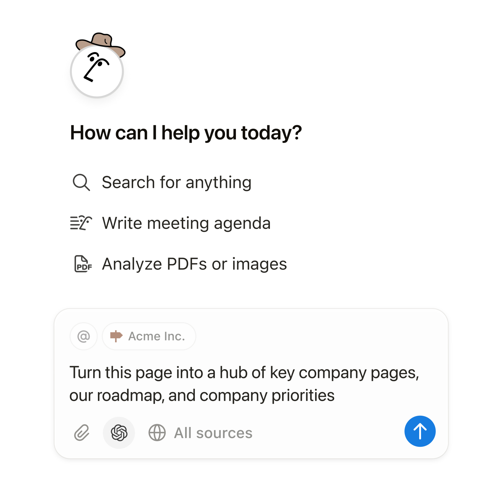
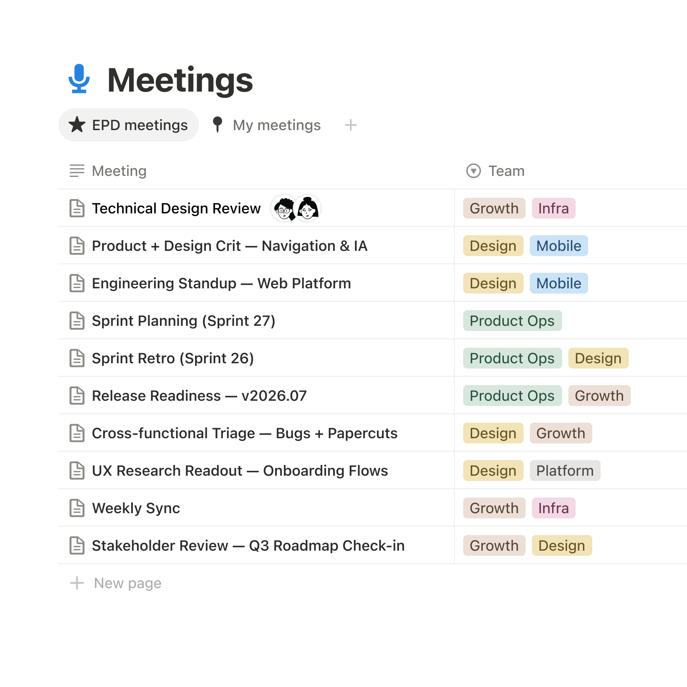
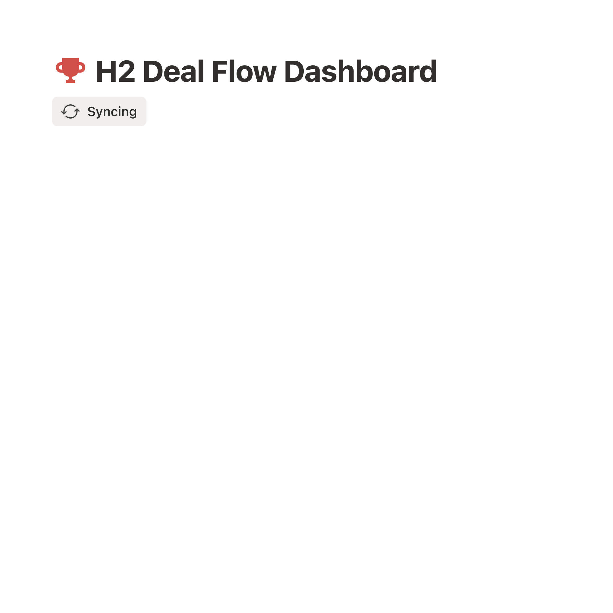
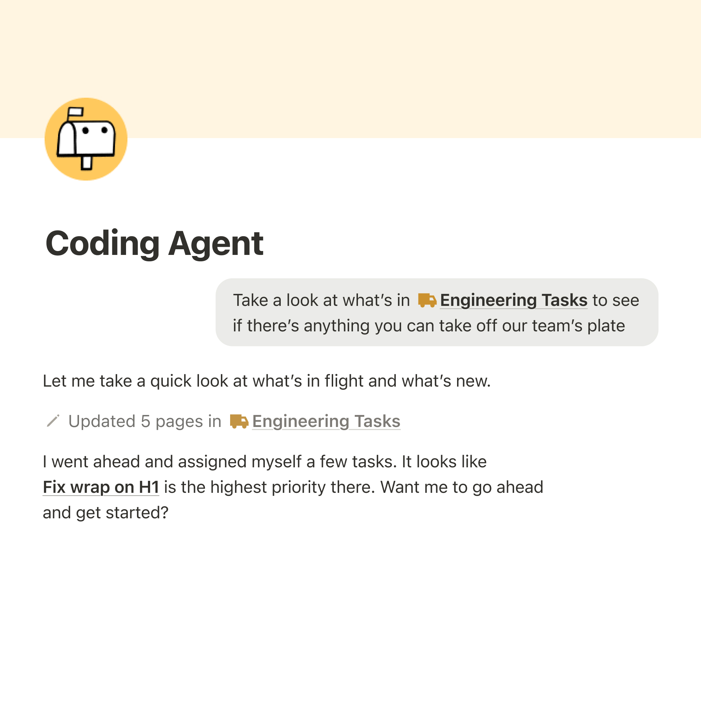

Company home
Everything your team needs to get started.
Capture context, find answers, and automate tasks with AI built for your team.

Trusted by teams at

 CursorNVIDIAVercel
CursorNVIDIAVercelCapture context
A connected workspace for your team's knowledge, projects, and ideas.

Find answers
Ask a question and find the context behind the answer.

Automate tasks
Give agents a job so your team can focus on what matters.

Everything your team needs to get started.